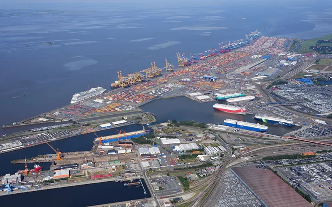
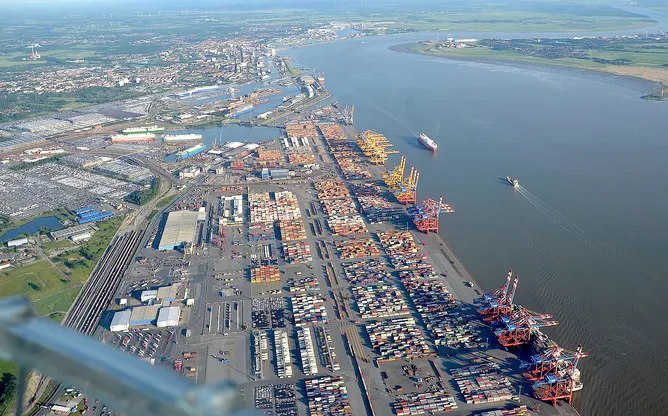
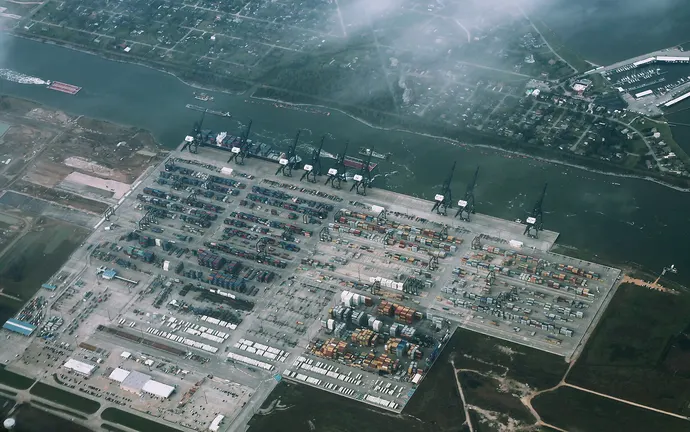
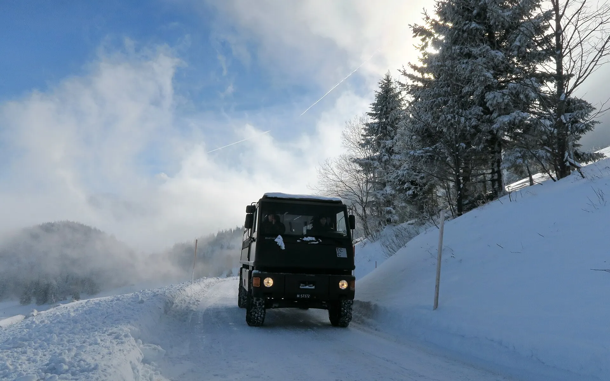

01 Começo rápido
Resolva um problema do pátio
Portão, segurança, doca: comece pelo único problema que mais atrasa o seu pátio hoje. Entre no ar em dias, com pouca interrupção e baixo custo.

Resolver agora01 Começo rápido
Portão, segurança, doca: comece pelo único problema que mais atrasa o seu pátio hoje. Entre no ar em dias, com pouca interrupção e baixo custo.

Resolver agora02 Um pátio em crescimento
Comece por um pátio, prove o valor e leve para os outros no seu tempo. Sem compromisso de plataforma para começar.

Saiba mais03 Rede de pátios
Uma torre de controle para todos os pátios, com a análise e a orquestração para comandar a operação inteira numa só tela.

Um sistema para todosCalculadora de eficiência
Com a CAIS seu pátio economiza
R$ 0
Economia estimada: 23%
Economia anual estimada por categoria:
Por que a CAIS
O Sistema Operacional de Pátio (SOP) usa visão computacional e decisões autônomas para transformar pátios caóticos, operados à mão, em ambientes logísticos que se acompanham sozinhos e entendem o que acontece. Os principais ganhos:
A visão computacional automatiza entrada, localização e validação do portão à doca: até 50% mais vazão e portões 85% mais rápidos.
Comece pelos módulos de que mais precisa e amplie conforme a operação fica mais complexa. No ar em 5 dias, com pouco esforço de TI e sem aparelhos de terceiros.
Fluxos automáticos acabam com a mão de obra no portão, no despacho e na conferência do pátio, e deixam a doca mais eficiente.
Tudo incluído, cobrado como serviço. Retorno medido em meses, sem investimento em capital.
Plataforma
Monte o seu Sistema Operacional de Pátio um módulo de cada vez. Do portão à doca, use o que precisa agora e amplie para automatizar fluxos, aumentar a produtividade e ter visibilidade total de cada ativo e de cada movimento no pátio.
Feito pelo setor

“Nunca vimos esse nível de precisão em visão computacional… é um marco importante na corrida para modernizar o pátio.”
Preencha o formulário e vamos adorar mostrar como a CAIS pode ajudar no seu pátio do futuro:
Quem entende confia.
RodosulFrio NorteCargas TupiAtacado BrisaVia Norte
As dúvidas mais comuns de quem está começando com a CAIS.
Câmeras e visão computacional registram cada carreta que entra, onde ela para e para onde vai. O sistema transforma isso em tarefas, alertas e indicadores, do portão à doca.
Um sistema tradicional depende de alguém digitar o que aconteceu. A CAIS enxerga o pátio sozinha e age na hora, sem papel e sem digitação.
São agentes de software que tomam decisões simples sozinhos, como chamar o manobrista certo ou reservar uma doca, e pedem ajuda quando precisam.
Acima de 99% na leitura de placas e números de contêiner nos pátios em operação, com conferência automática das divergências.
Sim. A torre de controle reúne todos os pátios, com permissões por unidade e comparação entre elas.